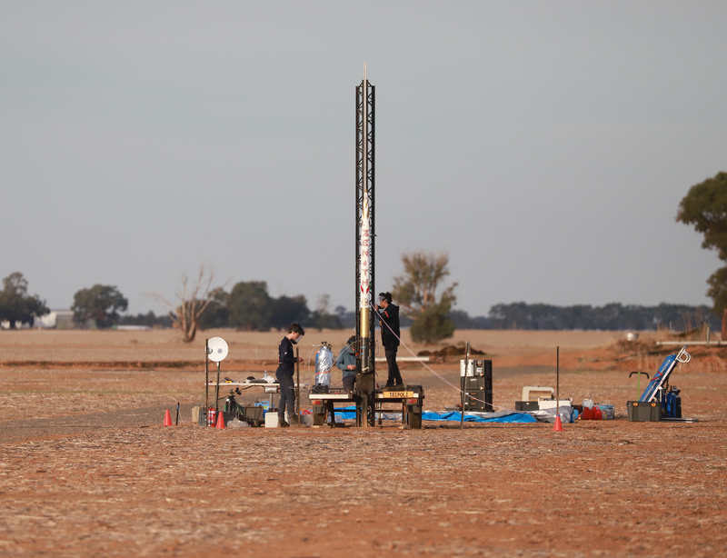
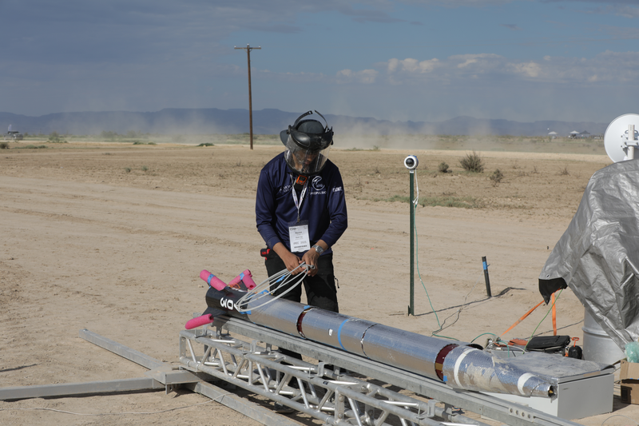
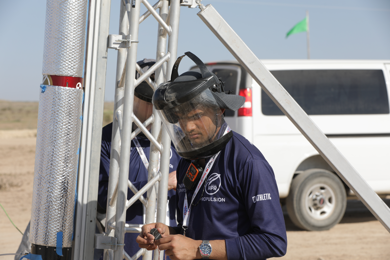

About
This page describes how I work when systems are live, safety-critical, and operated under real constraints. My experience spans production automation, propulsion testing and robotics, where timing and failure handling directly affect outcomes.
Based in Redmond, Washington.

Operating Context
I have worked in environments where systems cannot be paused, idealized, or debugged in isolation.
- Industrial automation: production vision systems integrated with PLCs and networked devices, operating under strict cycle-time and uptime constraints.
- Propulsion testing: avionics and ground systems during cold-flow, hot-fire and launch operations, verifying instrumentation and diagnosing issues under time pressure.
- Competitions and field operations: pad operations and field debugging under live-system constraints, alongside technical presentations of system architecture.

Field operations: launch activities during IREC 2025 for a student-built hybrid rocket.

Production automation: working on PLC-integrated vision systems deployed on live manufacturing lines at Bosch.

Technical ownership: presenting avionics and ground system architecture to judges and industry at IREC 2025.
How I Work
I design systems for live operation, repeatability, and predictable behavior under real conditions. My focus is on how a system behaves across repeated runs, with imperfect data, and when operated by others.
- I design systems assuming partial failure, noisy data, and limited ability to pause or isolate components.
- I prioritize instrumentation, observability, and recovery paths over idealized performance.
- I am comfortable moving between software, electronics, and hardware to diagnose issues end-to-end.
- I document systems based on how they are actually operated, so others can run and extend them safely.
